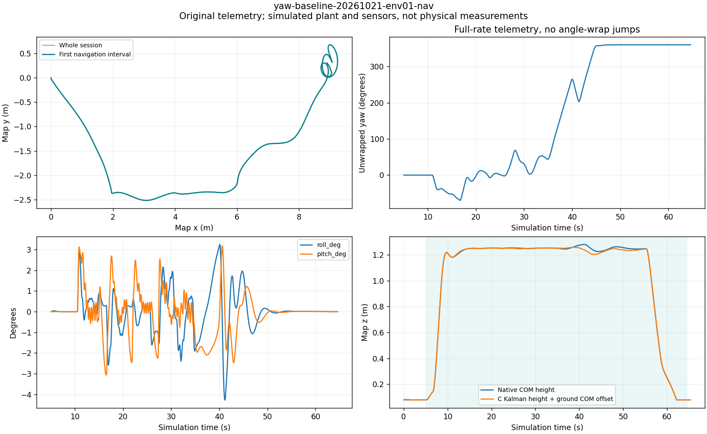
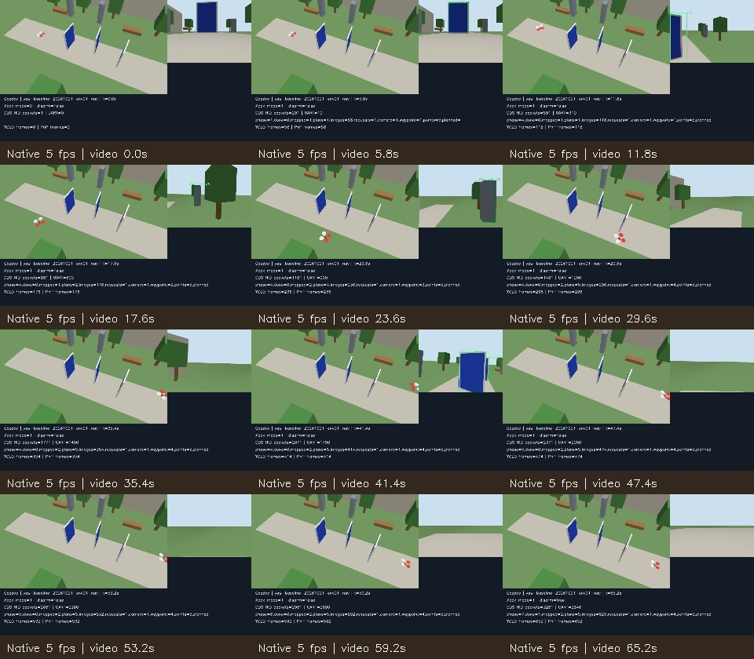
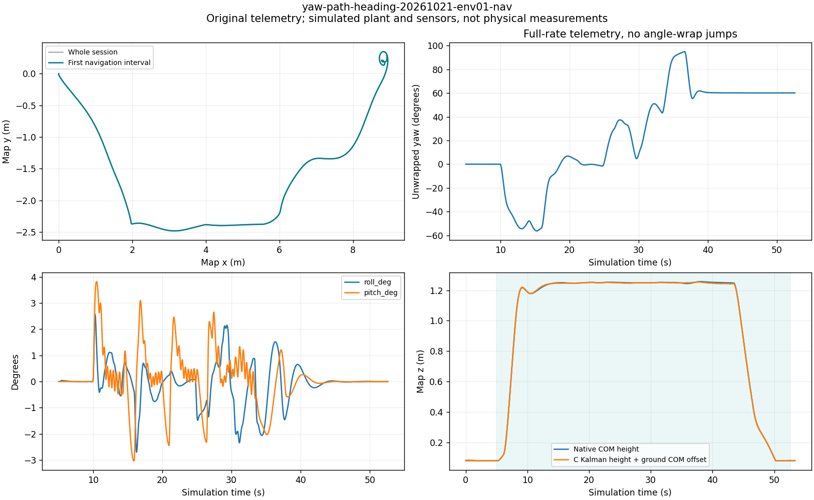
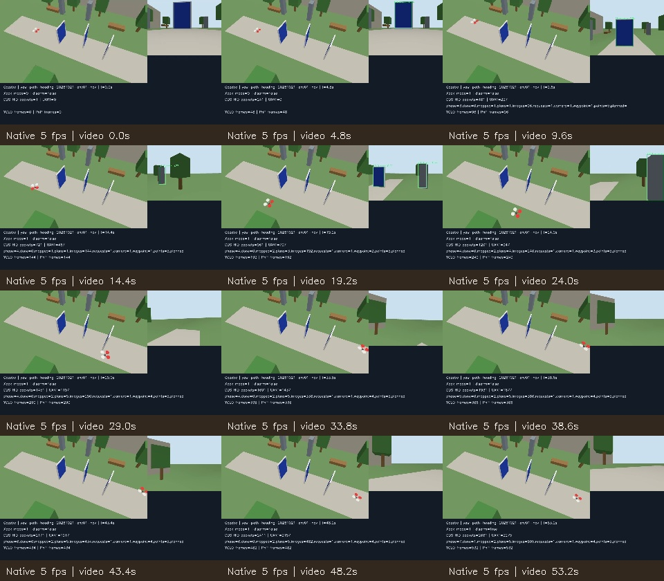
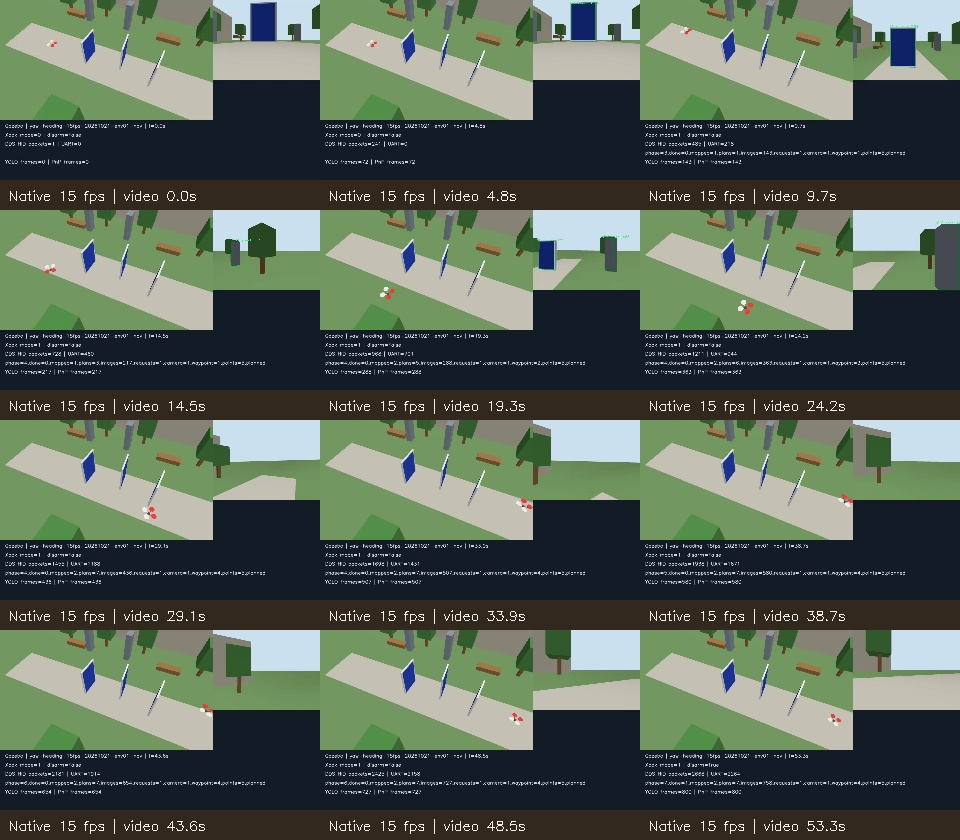
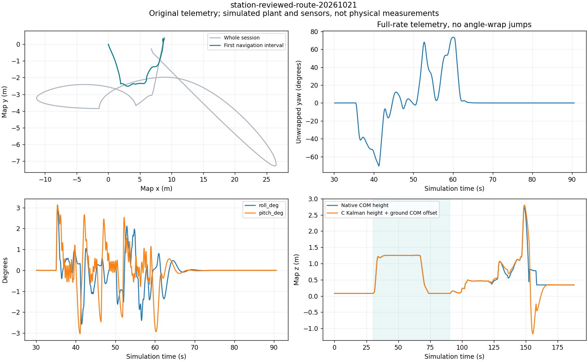
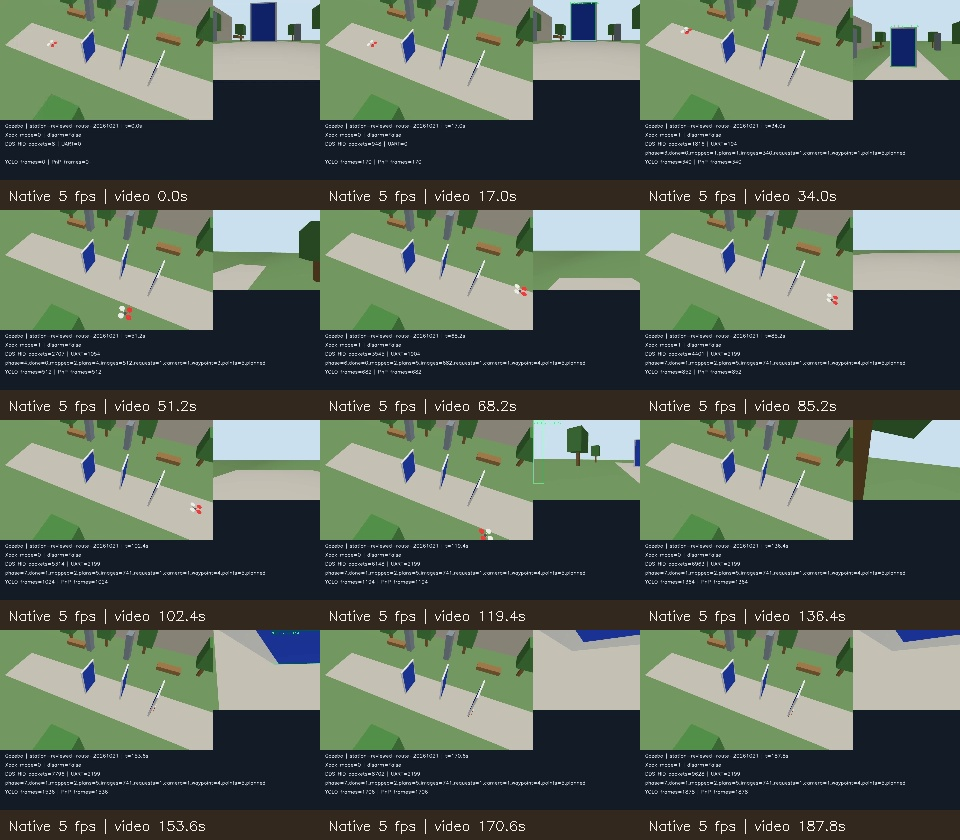

Native Gazebo 10.5/OGRE2, active ESP32 C host core, real ROS2 Cyclone DDS. Synthetic sensor/calibration/localization data; unmeasured 1.2 kg F450 model, inertia (0.012,0.012,0.022) kg·m², 6 N/motor and 40 ms lag. No physical BLE/I2C/UART/ESC or aircraft precision claim. New capture targets 15 fps; earlier 5 fps recordings remain 5 fps, with no interpolation. Full telemetry drives the numerical metrics; one-second graph summaries retain minima and maxima.
Baseline vs path-heading-hold runs use the same five-node mission and simulated Xbox reports. The browser trial uses real Xbox input plus explicitly labelled PC simulator gestures; its later manual collision is retained and must not be described as an entirely successful session.
Metrics, comparison, source hashes and assumptions · Flight station instructions
Single-case comparison: yaw travel change -57.0%, yaw-rate RMS change -39.5%. See original data before drawing conclusions about the real aircraft.
Original video: 5 fps · 327 native frames analysed · telemetry: 50 Hz
Evaluated navigation interval 5.04–64.56s; yaw travel 855.6°, yaw-rate RMS 23.29°/s. Whole-session native panel-contact steps: 0. Sampled navigation contact rows: 0.
Per-native-frame analysis · One-second graph means/min/max · Original telemetry · Original ROS2 log · Model assumptions and native contacts


Original video: 5 fps · 267 native frames analysed · telemetry: 500 Hz
Evaluated navigation interval 5.02–52.60s; yaw travel 367.7°, yaw-rate RMS 14.08°/s. Whole-session native panel-contact steps: 0. Sampled navigation contact rows: 0.
Per-native-frame analysis · One-second graph means/min/max · Original telemetry · Original ROS2 log · Model assumptions and native contacts


Original video: 15 fps · 801 native frames analysed · telemetry: 500 Hz
Evaluated navigation interval 5.02–52.64s; yaw travel 366.0°, yaw-rate RMS 14.01°/s. Whole-session native panel-contact steps: 0. Sampled navigation contact rows: 0.
Per-native-frame analysis · One-second graph means/min/max · Original telemetry · Original ROS2 log · Model assumptions and native contacts

Original video: 5 fps · 940 native frames analysed · telemetry: 50 Hz
Evaluated navigation interval 30.12–90.54s; yaw travel 497.3°, yaw-rate RMS 16.09°/s. Whole-session native panel-contact steps: 17681. Sampled navigation contact rows: 0.
Per-native-frame analysis · One-second graph means/min/max · Original telemetry · Original ROS2 log · Model assumptions and native contacts

